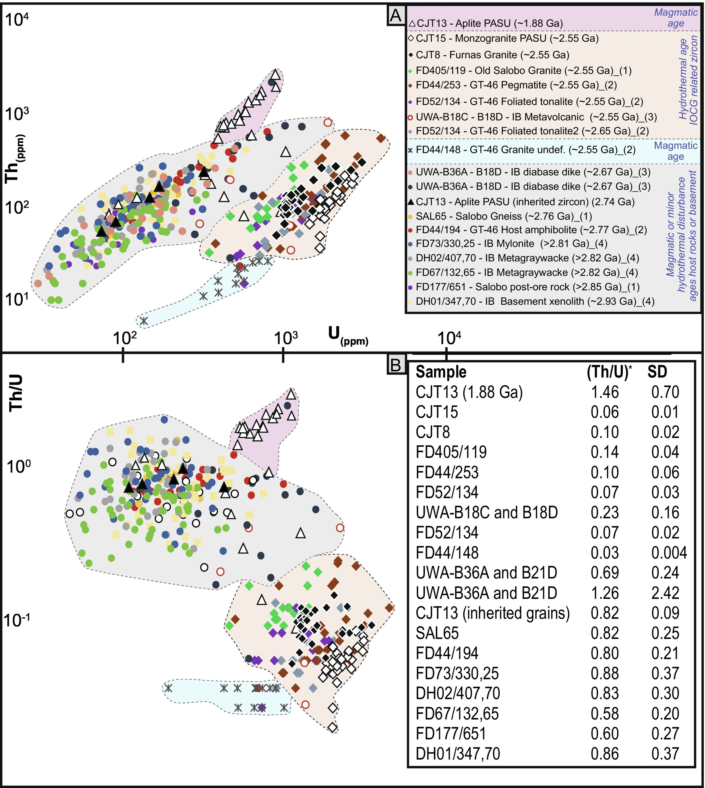

Hydrothermal geochemical signatures in zircon as pathfinder for IOCG mineralization: Na example from the Carajás Mineral Province (Brazil)

Resumo em Português
Zircões provenientes de rochas encaixantes hidrotermalicamente alteradas de depósitos arqueanos de óxido de ferro-cobre-ouro (IOCG) na Província Mineral de Carajás (PMC), Brasil, exibem composições distintas em U, Th e elementos de terras raras (ETR) em comparação com zircões de rochas ígneas não alteradas típicas. A geocronologia U-Pb em zircões dos depósitos Furnas e Paulo Afonso revela uma evolução complexa e multiepisódica na formação dos depósitos, caracterizada por: (1) grãos de zircão de ~2,75 Ga das rochas encaixantes com feições tipicamente magmáticas e sem evidências de alteração metassomática (ex.: textura em peneira, U elevado e enriquecimento em ETRL); (2) zircões de ~2,55 Ga das mesmas rochas, exibindo texturas e composições metassomáticas; e (3) cristais de zircão de ~1,9 Ga das rochas encaixantes com padrões magmáticos de ETR normalizados ao Condrito, mas com significativo enriquecimento em U.Ambos os depósitos, Furnas e Paulo Afonso, contêm pelo menos três populações de zircão, registrando eventos magmático-tectônicos e metassomáticos arqueanos e proterozóicos. Zircões hidrotermais de ~2,55 Ga ocorrem regionalmente em rochas da PMC, comumente associados a importantes depósitos IOCG e alinhados com a Zona de Cisalhamento Cinzento (ZCC) de escala regional. Esses cristais são interpretados como tendo cristalizado a partir de, ou alterados por, fluidos hidrotermais quimicamente similares durante atividade hidrotermal sin-tectônica, e não por cristalização magmática direta. Seu registro geocronológico complexo, composições em elementos traço e zoneamento e estruturas internas refletem sobreposição por fluidos hidrotermais associados à mineralização IOCG.Propõe-se que essas populações de zircão hidrotermal podem servir como indicadores de atividade hidrotermal sin-mineralização e, portanto, representam vetores de exploração valiosos para sistemas IOCG em terrenos policíclicos similares em outras regiões do mundo. Adicionalmente, o parâmetro Sm/Sm* recentemente introduzido — derivado da sistemática de ETR em zircão — emerge como uma ferramenta geoquímica promissora para exploração mineral. Ao quantificar o achatamento sutil de ETRL associado à modificação hidrotermal, o Sm/Sm* constitui um parâmetro promissor para distinguir populações de zircão relacionadas a minério daquelas estéreis, reforçando o potencial da geoquímica de zircão como proxy prático em sistemas do tipo IOCG.